| Column | Type | Source | Description | Missing |
|---|---|---|---|---|
taxStatus_DVLA |
VARCHAR | Bristol (VES) | As returned by the DVLA Vehicle Enquiry Service | 23.04% |
taxDueDate_DVLA |
DATE | Bristol (VES) | As returned by the DVLA Vehicle Enquiry Service | 34.25% |
motStatus_DVLA |
VARCHAR | Bristol (VES) | As returned by the DVLA Vehicle Enquiry Service | 23.04% |
motExpiryDate_DVLA |
DATE | Bristol (VES) | As returned by the DVLA Vehicle Enquiry Service | 37.43% |
markedForExport_DVLA |
BOOLEAN | Bristol (VES) | As returned by the DVLA Vehicle Enquiry Service | 23.04% |
ever_export_marked |
DOUBLE | Bristol (VES) | Number of VES checks that reported the vehicle as marked for export (0 if never) | 23.04% |
ever_SORN |
BOOLEAN | Bristol (VES) | TRUE if VES ever reported the vehicle as SORN | 23.04% |
artEndDate_DVLA |
DATE | Bristol (VES) | As returned by the DVLA Vehicle Enquiry Service | 98.03% |
dateOfLastV5CIssued_DVLA |
DATE | Bristol (VES) | As returned by the DVLA Vehicle Enquiry Service | 23.04% |
v5C_issue_date_ever_changed |
BOOLEAN | Bristol (VES) | TRUE if the V5C issue date changed between VES checks | 2.94% |
change_in_other_VES_field |
BOOLEAN | Bristol (VES) | TRUE if another VES field changed between checks | 2.94% |
dvla_match |
VARCHAR | pipeline | Whether the VES record describes this vehicle: same, different (at least two of make, manufacture year and engine size disagree; its values are not used) or no_dvla | 0% |
dvla_evidence |
INTEGER | pipeline | Number of make / year / engine comparisons between the DVSA and VES records that disagree (0-3) | 0% |
collectionDate_DVLA |
TIMESTAMP | Bristol (VES) | As returned by the DVLA Vehicle Enquiry Service | 2.94% |
is_error |
BOOLEAN | Bristol (VES) | TRUE if the last VES lookup for this registration returned an error | 2.94% |
error |
VARCHAR | Bristol (VES) | Error message from the last VES lookup | 79.9% |
n_VES_checks_to_linked_DVSA_regs |
BIGINT | Bristol (VES) | Number of VES checks made to the DVSA registrations linked to this vehicle (ves_4 onwards) | 2.94% |
n_VES_checks_for_DVLA_reg |
BIGINT | Bristol (VES) | Number of VES checks made for the DVLA registration (ves_4 onwards) | 2.94% |
n_VES_returns |
DOUBLE | Bristol (VES) | Number of those queries that returned a record | 2.94% |
first_VES_check |
TIMESTAMP | Bristol (VES) | First VES query for this registration | 2.94% |
first_VES_return |
TIMESTAMP | Bristol (VES) | First VES query that returned a record | 23.04% |
last_VES_check |
TIMESTAMP | Bristol (VES) | Last VES query for this registration | 2.94% |
last_VES_return |
TIMESTAMP | Bristol (VES) | Last VES query that returned a record | 23.04% |
31 Licensing status and DVLA lookups
31.1 Overview
DVLA details were collected by querying the Vehicle Enquiry Service (VES) for every registration in the DVSA data, many of them several times, between 2024 and 2026 (Chapter 8). These columns hold the vehicle’s licensing status as the VES reported it, the record of the lookups themselves, and the pipeline’s check of whether the VES record describes the same vehicle.
- Licensing status: tax status and due date, MOT status and expiry, whether the vehicle is marked for export, the date of its latest V5C (registration certificate) and the end date of the additional rate of tax (the supplement for cars with a high list price), all as at the last lookup that returned a record. These are supplied by the DVLA and not changed. Chapter 6 explains SORN, export and the other stages they describe.
- What changed between lookups:
ever_SORN,ever_export_marked,plate_ever_changed_VES,v5C_issue_date_ever_changedandchange_in_other_VES_fieldsummarise the changes the Bristol team saw across repeated lookups. - The lookups: when the registration was first and last queried and first and last returned a record, how many queries were made, and the error from the last one where it failed (methodology, section 2).
dvla_matchsays whether the VES record describes the same vehicle as the DVSA record. A registration can move between vehicles, so a lookup can return another vehicle’s record. Where at least two of make, year of manufacture and engine size disagree (dvla_evidence), the match isdifferentand the pipeline does not use the record’s values (section 5.1).
31.2 Coverage
These columns have three levels of coverage, which apply to every _DVLA column in the table:
- A lookup was made: 97% of vehicles. The lookup columns, such as
first_VES_checkandis_error, are present for all of these. - The lookup returned a record: 77% of vehicles. The licensing status columns and the other
_DVLAcolumns are present only for these. - The record describes this vehicle:
dvla_matchissamefor 77% of vehicles,differentfor 0.1% andno_dvlafor the rest.
How often a record was returned depends strongly on age (Figure 31.1). The VES only describes vehicles still on the DVLA register, so it returned a record for 62% of vehicles first used before 2000 and 65% of those first used in the 2000s, most of which have long left the road, against 96% of those first used in the 2010s. Where no record was returned, error holds the reason.
Vehicles first used in the last few years are a different case: many had not been registered, or had not reached the DVSA data, when the lookups were made. Hardly any vehicle first used in 2026 has a DVLA record (1%).
Some status fields are blank even where a record was returned, because the DVLA holds no value: taxDueDate_DVLA for some vehicles that are not taxed, motExpiryDate_DVLA for vehicles too new to need an MOT, and artEndDate_DVLA for all but the recent, expensive cars that pay the additional rate of tax.
| Column | All vehicles | Before 2000 | 2000–09 | 2010–19 | 2020 on |
|---|---|---|---|---|---|
taxStatus_DVLA |
77.0% | 61.9% | 64.8% | 96.3% | 82.0% |
taxDueDate_DVLA |
65.8% | 39.6% | 49.8% | 90.8% | 80.3% |
motStatus_DVLA |
77.0% | 61.9% | 64.8% | 96.3% | 82.0% |
motExpiryDate_DVLA |
62.6% | 40.5% | 59.9% | 90.6% | 42.2% |
markedForExport_DVLA |
77.0% | 61.9% | 64.8% | 96.3% | 82.0% |
ever_export_marked |
77.0% | 61.9% | 64.8% | 96.3% | 82.0% |
ever_SORN |
77.0% | 61.9% | 64.8% | 96.3% | 82.0% |
artEndDate_DVLA |
2.0% | 0.0% | 0.0% | 0.1% | 11.4% |
dateOfLastV5CIssued_DVLA |
77.0% | 61.8% | 64.8% | 96.3% | 82.0% |
v5C_issue_date_ever_changed |
97.1% | 99.9% | 99.8% | 99.4% | 84.3% |
change_in_other_VES_field |
97.1% | 99.9% | 99.8% | 99.4% | 84.3% |
dvla_match |
100.0% | 100.0% | 100.0% | 100.0% | 100.0% |
dvla_evidence |
100.0% | 100.0% | 100.0% | 100.0% | 100.0% |
collectionDate_DVLA |
97.1% | 99.9% | 99.8% | 99.4% | 84.3% |
is_error |
97.1% | 99.9% | 99.8% | 99.4% | 84.3% |
error |
20.1% | 38.1% | 35.1% | 3.1% | 2.3% |
n_VES_checks_to_linked_DVSA_regs |
97.1% | 99.9% | 99.8% | 99.4% | 84.3% |
n_VES_checks_for_DVLA_reg |
97.1% | 99.9% | 99.8% | 99.4% | 84.3% |
n_VES_returns |
97.1% | 99.9% | 99.8% | 99.4% | 84.3% |
first_VES_check |
97.1% | 99.9% | 99.8% | 99.4% | 84.3% |
first_VES_return |
77.0% | 61.9% | 64.8% | 96.3% | 82.0% |
last_VES_check |
97.1% | 99.9% | 99.8% | 99.4% | 84.3% |
last_VES_return |
77.0% | 61.9% | 64.8% | 96.3% | 82.0% |
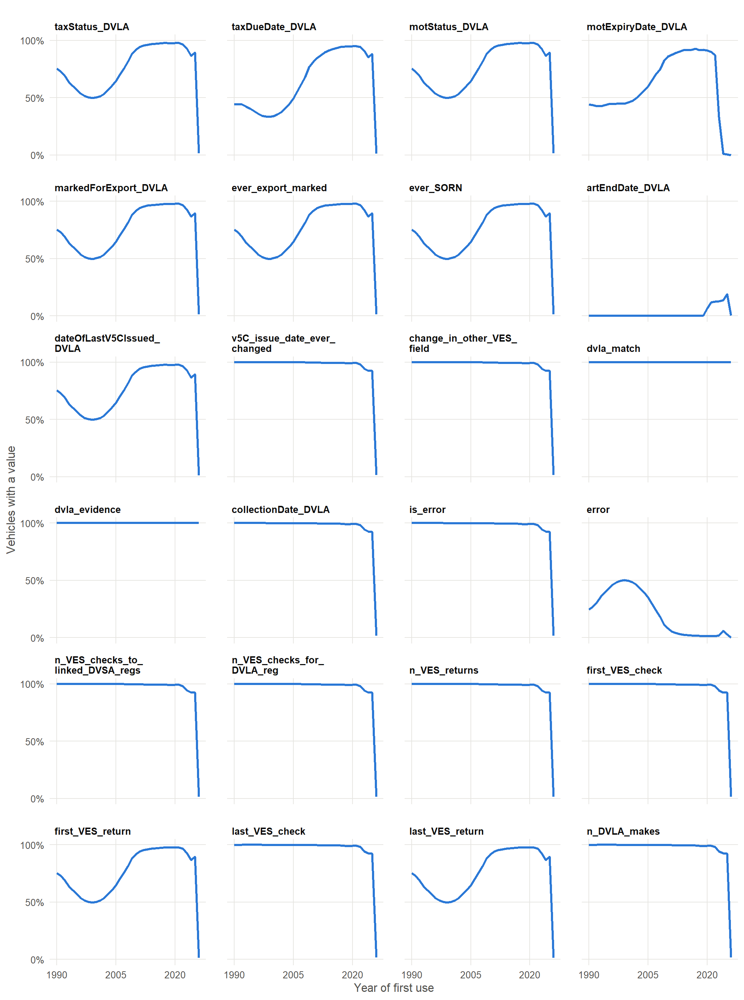
31.3 Values
How the values of each column change over time, by year of first use, from 1990. Numeric columns and dates show the minimum, lower quartile (Q1), median, upper quartile (Q3) and maximum; other columns show the share of vehicles with each value, with the less common values grouped as All other values and missing values as Blank.
taxStatus_DVLA
As returned by the DVLA Vehicle Enquiry Service.
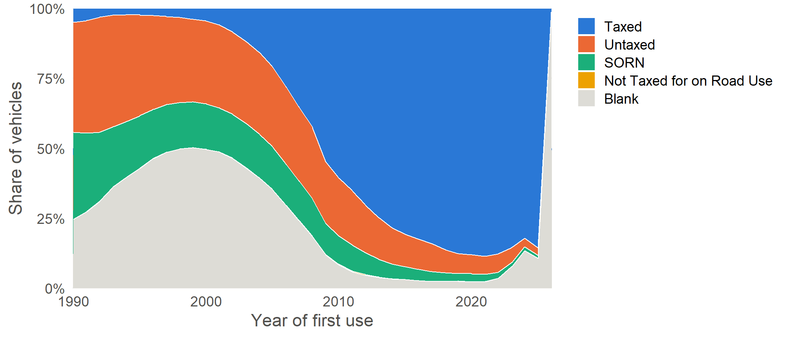
taxDueDate_DVLA
As returned by the DVLA Vehicle Enquiry Service.
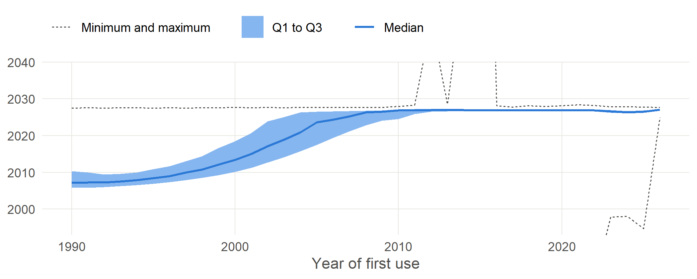
motStatus_DVLA
As returned by the DVLA Vehicle Enquiry Service.
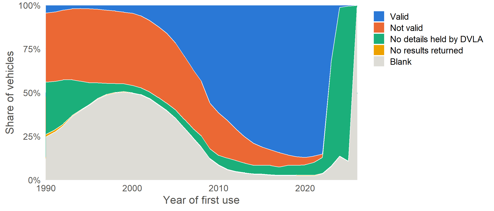
motExpiryDate_DVLA
As returned by the DVLA Vehicle Enquiry Service.
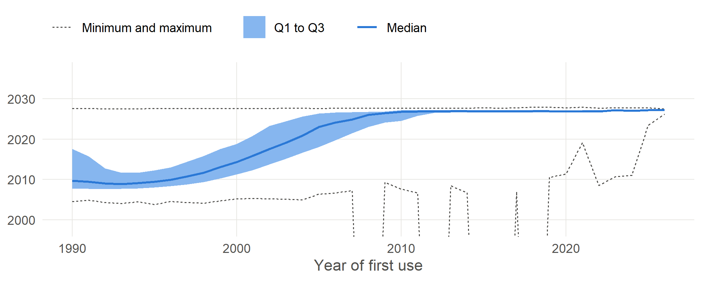
markedForExport_DVLA
As returned by the DVLA Vehicle Enquiry Service.
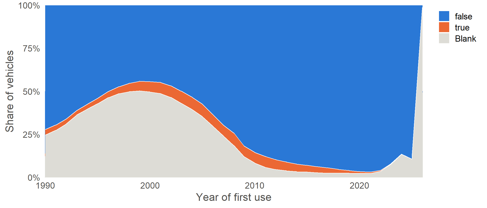
ever_export_marked
Number of VES checks that reported the vehicle as marked for export (0 if never).
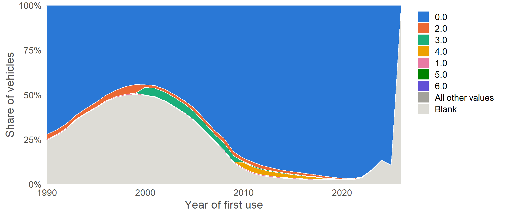
ever_SORN
TRUE if VES ever reported the vehicle as SORN.
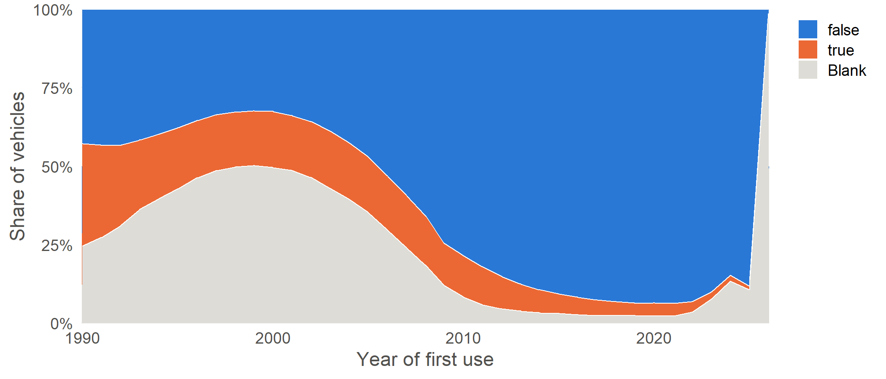
artEndDate_DVLA
As returned by the DVLA Vehicle Enquiry Service.
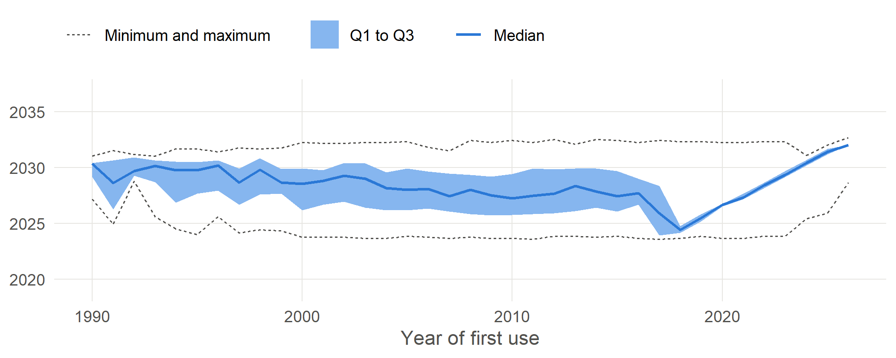
dateOfLastV5CIssued_DVLA
As returned by the DVLA Vehicle Enquiry Service.
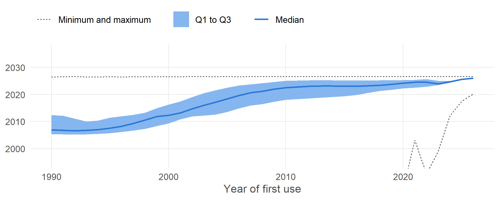
v5C_issue_date_ever_changed
TRUE if the V5C issue date changed between VES checks.
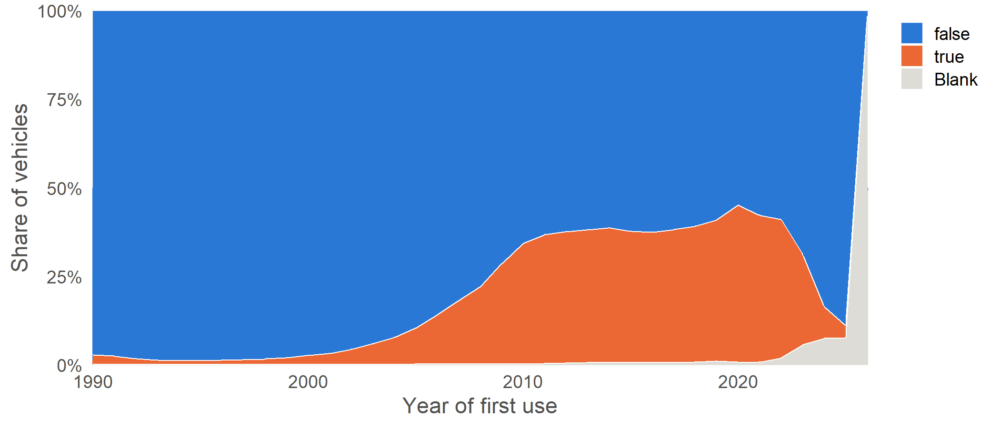
change_in_other_VES_field
TRUE if another VES field changed between checks.
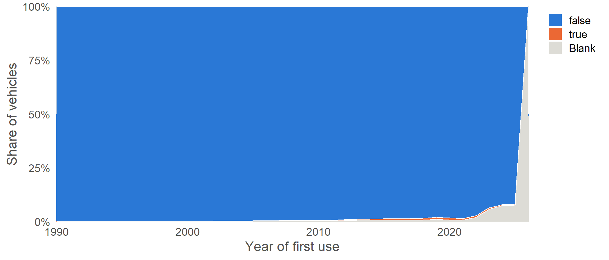
dvla_match
Whether the VES record describes this vehicle: same, different (at least two of make, manufacture year and engine size disagree; its values are not used) or no_dvla.
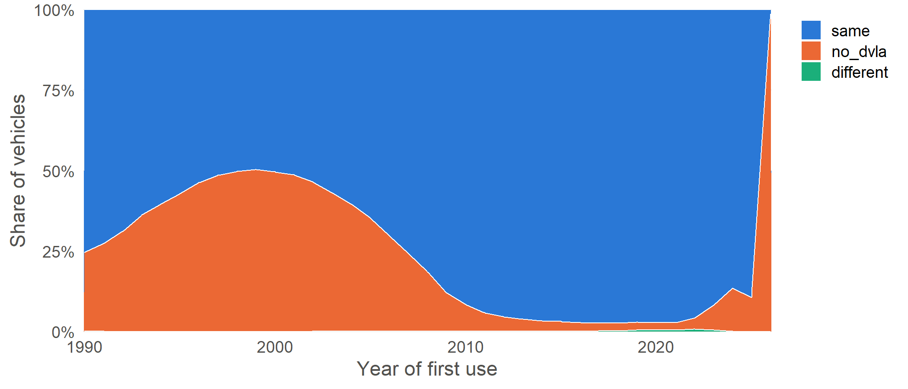
dvla_evidence
Number of make / year / engine comparisons between the DVSA and VES records that disagree (0-3).
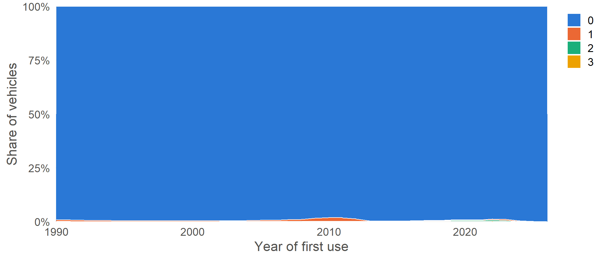
collectionDate_DVLA
As returned by the DVLA Vehicle Enquiry Service.
is_error
TRUE if the last VES lookup for this registration returned an error.
error
Error message from the last VES lookup.
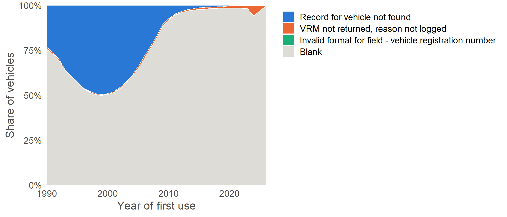
n_VES_checks_to_linked_DVSA_regs
Number of VES checks made to the DVSA registrations linked to this vehicle (ves_4 onwards).
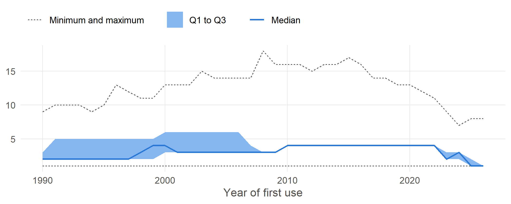
n_VES_checks_for_DVLA_reg
Number of VES checks made for the DVLA registration (ves_4 onwards).
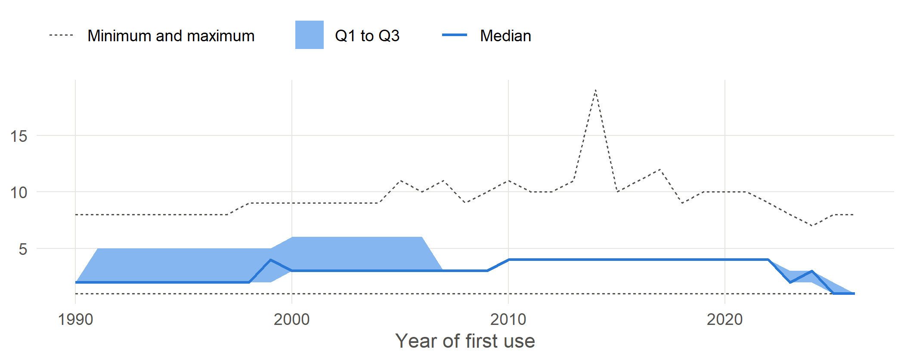
n_VES_returns
Number of those queries that returned a record.
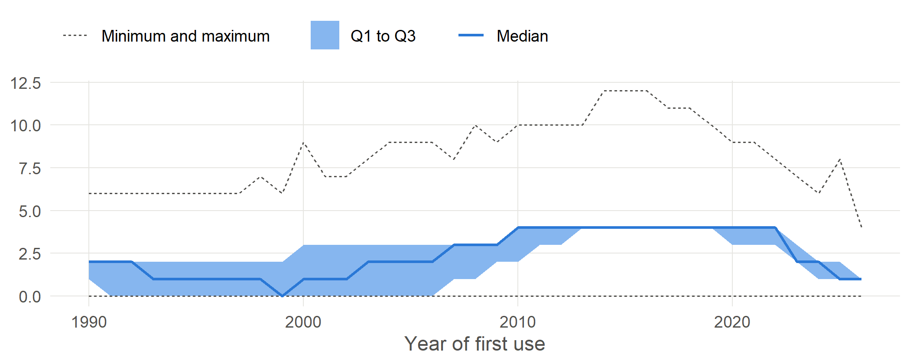
first_VES_check
First VES query for this registration.
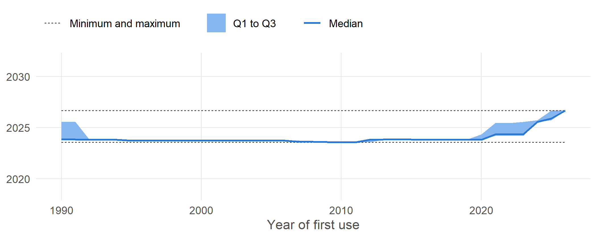
first_VES_return
First VES query that returned a record.
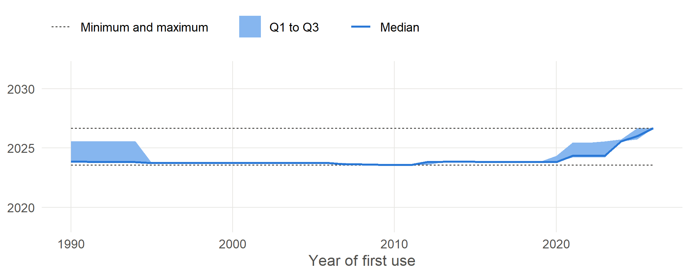
last_VES_check
Last VES query for this registration.
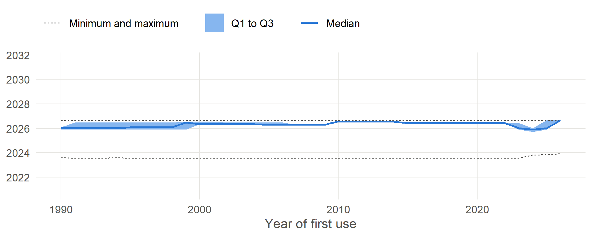
last_VES_return
Last VES query that returned a record.
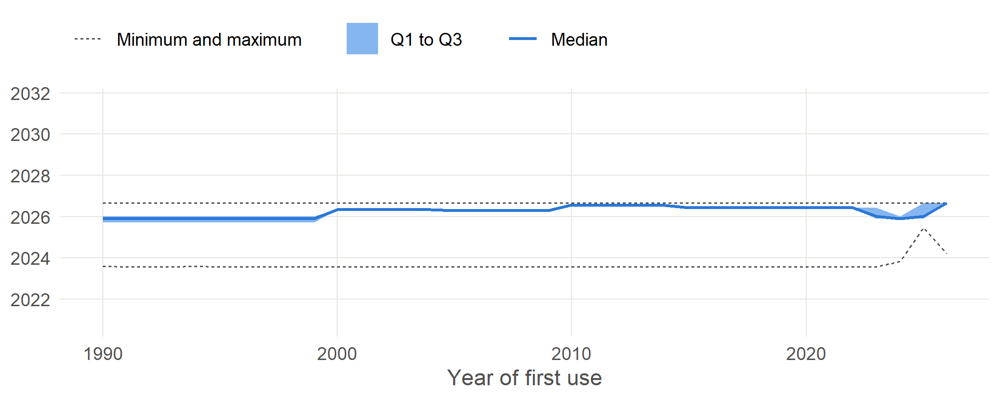